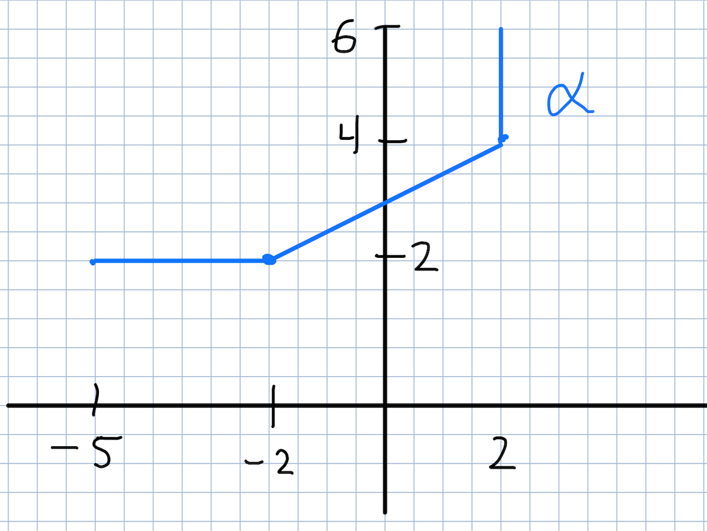

La integral con respecto a longitud de arco
Introducción
Definición
Sea \(f: U \to \mathbb{R}\), una función continua en \(U\) (nota que \(f\) toma valores escalares). Consideremos \(\alpha:[a,b]\to \mathbb{R}^n\) una curva suave tal que su traza está contenida en \(U\).
La integral con respecto a longitd de arco de \(f\) a lo largo de \(\alpha\) se define como \[ \int_\alpha f ds=\int_a^b f(\alpha(t))\| \alpha'(t)\|dt \] Nota: Por costumbre, se usa el parámetro \(ds\) para denotar la integral por longitud de arco.
Ejercicio
Demuestra que \[ \int_\alpha (a+bx+cy+dxy+ex^2+fy^2 )ds=2\pi r a+ \pi r^3(e+f) \] donde \(a,b,c,d,e,f\) son constantes y \(\alpha\) es la circunferencia de radio \(r\) y centrada en el origen.Nota
Al igual que en el caso de las integrales de línea, es importante notar que la integral con respecto a longitud de arco NO depende de la parametrización de la curva, este ejercicio demuestra precisamente eso. Una diferencia importante es que la integral con respecto a longitud de arco no cambia si se cambia la orientación.
Ejercicio
Sean \(\alpha:[a,b]\to \mathbb{R}^n\) y \(\beta:[c,d]\to \mathbb{R}^n\) dos curvas suaves, equivalentes y \(f\) una función continua definida sobre la traza de dichas curvas. Demuestra que, sin importar que \(\alpha\) y \(\beta\) tengas orientaciones iguales o distintas, siempre se tiene que \[ \int_\alpha f ds= \int_\beta f ds. \]
Ejercicio
Calcula las siguientes integrales con respecto a longitud de arco.
- \[ \int_\alpha xe^{yz} \] donde \(\alpha\) es el segmento de recta que une \((0,0,0)\) con \((2,-3,-5)\)
- \[ \int_\alpha xy^4 ds \] donde \(\alpha\) es la cuarta parte de la circunferencia \(x^2+y^2=9\) que está en el primer cuadrante.
- \[ \int_\alpha x^2+y^2+z^2ds \] donde \(\alpha(t)=(e^{2x},\cos(t),\sen(t))\), \(0\leq t \leq \pi\).
Ejercicio
Considera la función escalar \(f(x,y,z)=cx\), donde \(c\) es una constante. Prueba que si la curva \(\alpha\) es perpendicular al eje \(x\), es decir \(\alpha(t)\cdot (1,0,0)=0\) para toda \(t\), entonces \[ \int_\alpha f(x,y,z)ds=0 \]
Nota
Ejercicio
Para \(n\in \mathbb{Z}\) considera la trayectoria \(\alpha_n(t)=(\cos(nt),\sen(nt))\), \(0\leq t \leq 2\pi\) (el circulo unitario recorrido \(n\)-veces). Prueba \begin{eqnarray*} \int_{\alpha_n} 1 ds&=&2\pi |n| \\ \int_{\alpha_n} x^2ds&=& \int_{\alpha_n} y^2ds =\pi |n|\\ \end{eqnarray*} Nota que la \(n\) aparece con valor absoluto.
Ejercicio
Prueba que
- Si \(\alpha\) es el segmento de recta que une el punto \((r,0)\) con \((0,r)\), (con \(r>0\)) entonces: \[ \int_\alpha (x+y)ds=(1+\sqrt{2})r^2. \]
- \(\beta\) es el segmento de circunferencia de \(x^2+y^2=r^2\), que une \((r,0)\) con \((0,r)\), (con \(r>0\)) y que está por arriba del eje de las \(x\) entonces: \[ \int_\beta (x+y)ds=2r^2. \]
Ejercicio
Por \(\alpha\) denotamos una circunferencia centrada en el origen de radio \(r>0\).
- Prueba \[ \int_\alpha x^2 ds= \frac{1}{2}\int_\alpha (x^2+y^2)ds. \]
- Para un entero \(n\geq 1\), se cumple: \[ \int_\alpha (x^2+y^2)^n ds=2\pi r^{2n}. \]
Ejercicio MATLAB
Calcula
- \[ \int_\alpha x^3y^2z \] donde \(\alpha=(e^{-t}\cos(6t), e^{-t}\sin(6t), e^{-t})\) con \(0\leq t \leq 2\pi\).
- \[ \int_\alpha e^{xyz}ds \] donde \(\alpha\) es el segmento de recta que une \((1,1,1)\) con \((2,3,4)\).
Definición
Para un cable, tendido a lo largo de una curva \(\alpha\), con densidad \(\rho(x,y,z)\) (masa por unidad de volumen) en el punto \((x,y,z)\), se define la masa del cable como \[ \int_\alpha \rho(x,y,z)ds \] Las coordenadas de su centro de masa (o centroide), denotadas \((\overline{x},\overline{y})\), están dadas por \[ \overline{x}=\frac{1}{M}\int_\alpha x \rho(x,y,z)ds \] \[ \overline{y}=\frac{1}{M}\int_\alpha y \rho(x,y,z)ds \] \[ \overline{z}=\frac{1}{M}\int_\alpha z \rho(x,y,z)ds \] Dado un eje \(L\) en el espacio, el momento de incercia con respecto a \(L\) se define como \[ \int_\alpha (\lambda(x,y,z))^2 \rho(x,y,z)ds \] donde \(\lambda(x,y,z)\) denota la distancia del punto \((x,y,z)\) al eje \(L\).
Nota: si el cable "está aplanado", la función densidad sólo depende de dos variables \(\rho(x,y)\) y las integrales anteriores se ajustán a sólo dos variables, desapareciendo la coordenada \(z\).
Ejercicio
Considera un cable helicoidal dado por \(\alpha(t)=(a\cos(t),a\sen(t),bt)\), \(0 \leq t \leq 2\pi\). Si la densidad está dada por \(\rho(x,y,z)=x^2+y^2+z^2\) calcula:
- Su masa.
- Su centro de masa.
- Su momento de inercia con respecto al eje \(z\).
Ejercicio
Considera un cable, de forma semicircular de radio \(r>0\), de densidad constante.
- Encuentra \(M\), la masa del cable.
- Prueba que el centroide del cable cae en el eje de simetría del cable a una distancia \(2r/\pi\) de su centro.
- Prueba que el momento de incercia, con respecto al diámetro que une los extremos del cable, es \(\frac{1}{2}r^2M\).
Definición
Sea \(f:U\to \mathbb{R}\) una función continua en \(U\). Si \(\beta:[a,b] \to \mathbb{R}\) es una trayectoria parametrizada suave a trozos (con traza contenida en \(U\)) y \( \{a=t_0< \cdots < t_n=b \}\) es una partición de \([a,b]\) tal que \(\beta\) restringida a \([t_{j-1}, t_{j}]\) es suave, definimos \[ \int_\beta f ds = \sum_{j=1}^n \int_{\beta_j} f ds \] donde \(\beta_j\) es simplemente la restricción de \(\beta\) al intervalo \([t_{j-1},t_j]\).
Al igual que con la integral de línea ésta definición no depende de la partición de \([a,b]\) que se tome.
Ejercicio
Calcula las siguientes integrales con respecto a la longitud de arco.
- \[ \int_\alpha e^yds \] donde \(\alpha\) es la parte de la gráfica de \(|x|+|y|=2\) que está por arriba del eje de las \(x\).
-
\[
\int_\alpha xy ds
\]
donde \(\alpha\) está dada como en la figura de abajo.

-
\[
\int_\alpha x ds
\]
donde \(\alpha(t)=(\cos^3(t),\sen^3(t))\), \(0\leq t \leq 2\pi\).
La curva se muestra en la figura de abajo.

Definición
Dada una trayectoria parametrizada suave a trozos, \(\alpha:[a,b]\to \mathbb{R}^n\). La función longitud de arco de la curva \(\alpha\) se define como \[ s(t)=\int_a^t \|\alpha'(u) \|du \] Nota que, ya que \(\alpha'\) es continua, el Teorema Fundamental del Cálculo imploca que \[ s'(t)=\|\alpha'(t)\|, \forall t \] La lontigud de arco de \(\alpha\) (o simplemente longitud) se define como \[ \int_a^b \| \alpha'(u)\|du \]
Nota
Es muy importante notar que, gracias al Ejercicio, la longitud de arco NO depende de la parametrización de la curva, es decir, la longitud es una característica intrínsica de la curva.
Ejercicio
Usando la Definición de longitd de arco de una curva suave, prueba:
- La longitd del segmento que une dos puntos, \(P\) y \(Q\), es \(\|P-Q\|\).
- La longitud de una circunferencia de radio \(r>0\) es \(2\pi r\).
Ejercicio
Calcula la longitud de arco de las siguientes curvas.
- \(\alpha(t)=(e^{t}\cos(t), e^{t}\sen(t))\), \(0 \leq t \leq 2\pi\).
- \(\alpha(t)=(3t,\frac{1}{2}t^2,t^3)\), \(0 \leq t \leq 2\).
Ejercicio
Considera una elipse parametrizada por \(\alpha(t)=(a\cos(t),a\sen(t))\), \(0\leq t \leq 2\pi\) con \( 0 < b < a \). Muestra que la longitud de arco de la elipse es \[ L=4a\int_0^{\pi/2} \sqrt{1-e^2\sin^2(t)}dt \] donde \(e=\frac{\sqrt{a^2-b^2}}{a}\) (llamada la exentricidad de la elipse).